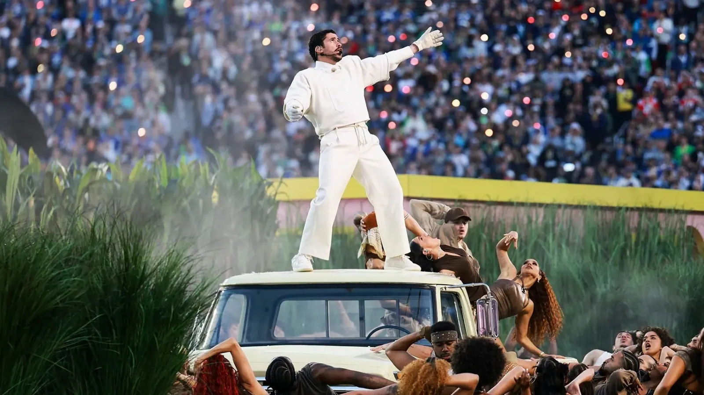

Le 8 février 2026, au Levi's Stadium de Santa Clara en Californie, Bad Bunny est devenu le premier artiste latino hispanophone à headliner seul le show de la mi-temps du Super Bowl. Devant 128,2 millions de téléspectateurs américains, le rappeur portoricain a offert un spectacle entièrement en espagnol, mêlant reggaeton, plena et bomba, en un acte de fierté culturelle retentissant — au moment même où les politiques migratoires de l'administration Trump plaçaient les communautés latinos au cœur des tensions politiques américaines.
Lorsque Bad Bunny a émergé d'un décor de hautes tiges de canne à sucre pour entamer « Tití Me Preguntó », il a d'emblée planté le décor de ce que serait sa prestation : un voyage immersif dans l'âme de Porto Rico. Sur scène, des vendeurs de piragua (glaces pilées), des hommes jouant aux dominos, des danseurs construisant des abris avec des parpaings, et la réplique fidèle de « La Casita » — la maison rose traditionnelle portoricaine devenue emblème de ses tournées. La chanteuse Maria Antonia Cay, propriétaire du club social latino Toñita's à Williamsburg (Brooklyn), posait fièrement dans une reproduction parfaite de son bar.
La setlist a enchaîné ses plus grands succès : « Yo Perreo Sola », ode à l'indépendance féminine sur la piste de danse, les anthems reggaeton « Safaera », « Party », « Voy a Llevarte Pa' PR », « EoO », puis des titres de son album primé Debí Tirar Más Fotos, dont « DTMF » et « Baile Inolvidable ». Les classiques du genre ont aussi été représentés : « Gasolina » de Daddy Yankee et « Dale » de Don Omar ont résonné dans le stade, sans que leurs interprètes originaux ne montent sur scène.
Lady Gaga a été la première artiste à rejoindre Bad Bunny sur scène — sa troisième apparition dans un show de la mi-temps du Super Bowl — interprétant « Die With a Smile » avec une touche hispanophone. Ricky Martin a ensuite fait une entrée remarquée pour performer « Lo Que Le Pasó a Hawaii », devenant par la même occasion le premier homme ouvertement homosexuel à se produire sur la scène du Super Bowl. Le groupe traditionnel Los Pleneros de la Cresta a apporté la dimension folk de la plena et de la bomba portoricaine, ancrant le show dans les traditions musicales des montagnes de l'île. En coulisses de « La Casita », les caméras ont capturé des célébrités invitées : Cardi B, Karol G, les acteurs Pedro Pascal et Jessica Alba, ainsi que l'influenceuse Alix Earle.
« C'est pour mon peuple, ma culture et notre histoire. »
— Bad Bunny, lors de l'annonce de sa participation, 28 septembre 2025La sélection de Bad Bunny par la NFL et Roc Nation est intervenue dans un contexte de vives tensions politiques. L'artiste avait, en début d'année 2025, annoncé qu'il ne se produirait pas aux États-Unis continentaux, réservant ses concerts de tournée aux résidents de Porto Rico, en signe de protestation contre les opérations de l'ICE (Immigration and Customs Enforcement). Ce n'est qu'après discussion avec son équipe qu'il avait accepté de faire « une seule date aux États-Unis » — le Super Bowl.
La réaction conservatrice a été virulente. L'organisation Turning Point USA de Charlie Kirk a organisé en parallèle un « halftime show alternatif » promu par le vice-président JD Vance et mettant en vedette Kid Rock. La secrétaire à la Sécurité intérieure Kristi Noem avait déclaré que l'ICE serait « partout dans les parages », bien que le responsable sécurité de la NFL ait précisé qu'aucun agent de l'ICE ne serait présent dans le stade. Le président Trump a pour sa part affirmé ne pas connaître Bad Bunny et jugé le choix « ridicule ».
La NFL et Roc Nation annoncent officiellement Bad Bunny comme headliner du Super Bowl LX Halftime Show. L'artiste avait précisé ne vouloir faire « qu'une seule date aux États-Unis ».
Bad Bunny apparaît dans Saturday Night Live et lance un défi public : apprendre l'espagnol avant le Super Bowl. Duolingo lance une campagne marketing autour de cette déclaration.
Lors des 68e Grammy Awards, Debí Tirar Más Fotos remporte l'Album de l'année, renforçant encore l'attente autour du show de la mi-temps.
Bad Bunny monte sur la scène du Levi's Stadium. Show entièrement en espagnol, avec Lady Gaga, Ricky Martin et Los Pleneros de la Cresta comme invités. Le Seahawks bat les Patriots 29-13.
Les charts s'enflamment. « DTMF » entre directement à la 1re place du Billboard Hot 100. Duolingo annonce un bond de 35 % des inscriptions à l'apprentissage de l'espagnol.
Le choix de Bad Bunny s'inscrit dans une stratégie délibérée de la NFL pour conquérir les 39 millions de fans latinos américains du football. En 2024, la vice-présidente senior au marketing de la ligue, Marissa Solis, avait déclaré que la croissance de la NFL était « mathématiquement impossible sans les Latinos ». Le Super Bowl LX a également été le plus largement diffusé en espagnol de l'histoire : Fox Deportes et Telemundo ont assuré des retransmissions séparées en langue espagnole, attirant 4,8 millions de téléspectateurs sur Telemundo — un record absolu pour une diffusion de football américain sur cette chaîne.
Le show de mi-temps du Super Bowl LX dépasse largement le cadre d'un concert sportif. En choisissant de performer presque exclusivement en espagnol sur la plus grande scène télévisuelle américaine, Bad Bunny a posé une question fondamentale : qui est américain ? L'artiste, citoyen américain de naissance en tant que Portoricain, a reconfiguré symboliquement la notion d'« américanité » pour englober l'ensemble du continent. Son show, saturé de références à la plena, à la bomba, aux traditions rurales portoricaines et à la diaspora latina de New York, constitue une réponse culturelle à la politique migratoire de l'administration Trump. En 2025, alors que son artiste le plus streamé au monde refusait de se produire en territoire continental américain, la NFL elle-même a décidé de placer cette figure de résistance au centre de sa vitrine mondiale. Le résultat dépasse la musique : c'est un moment de bascule dans la représentation culturelle des États-Unis, qui force à redéfinir ce que signifie appartenir à la nation américaine.
On February 8, 2026, at Levi's Stadium in Santa Clara, California, Bad Bunny became the first Latino solo artist to headline the Super Bowl halftime show. Watched by 128.2 million American viewers, the Puerto Rican rapper delivered a performance conducted almost entirely in Spanish, blending reggaeton, plena and bomba into a resounding act of cultural pride — at the very moment when the Trump administration's immigration policies were placing Latino communities at the centre of American political tensions.
When Bad Bunny emerged from towering sugar cane stalks to open with "Tití Me Preguntó," he immediately established what this performance would be: a fully immersive voyage into the soul of Puerto Rico. The stage featured vendors selling piragua (shaved ice), men playing dominos, dancers building shelters with cinderblocks, and a faithful replica of "La Casita" — the iconic pink Puerto Rican house that has become a fixture of his tours. Maria Antonia Cay, owner of the legendary Latino social club Toñita's in Williamsburg, Brooklyn, appeared inside a perfect storefront recreation of her bar.
The setlist swept through his greatest hits: "Yo Perreo Sola," "Safaera," "Party," "Voy a Llevarte Pa' PR," "EoO," then tracks from his Grammy-winning album Debí Tirar Más Fotos, including "DTMF" and "Baile Inolvidable." Reggaeton classics also featured prominently: Daddy Yankee's "Gasolina" and Don Omar's "Dale" both received their moment, though neither artist appeared in person.
Lady Gaga was the first to join Bad Bunny on stage — her third Super Bowl halftime appearance — performing "Die With a Smile" with a Spanish flair. Ricky Martin then made a celebrated entrance to perform "Lo Que Le Pasó a Hawaii," becoming the first openly gay man to perform on the Super Bowl halftime stage. The traditional ensemble Los Pleneros de la Cresta brought the folk dimensions of plena and bomba, grounding the show in the musical traditions of Puerto Rico's mountains. Inside "La Casita," cameras caught celebrity guests Cardi B, Karol G, actors Pedro Pascal and Jessica Alba, and influencer Alix Earle.
"This is for my people, my culture, and our history."
— Bad Bunny, upon announcing his participation, September 28, 2025Bad Bunny's selection by the NFL and Roc Nation came in a charged political context. The artist had, in early 2025, announced he would not perform in the continental United States, reserving his tour concerts for Puerto Rico residents, as a protest against ICE (Immigration and Customs Enforcement) operations. He only agreed to make "just one date in the US" after discussions with his team — the Super Bowl itself.
The conservative backlash was fierce. Charlie Kirk's Turning Point USA organised a parallel "alternative halftime show" promoted by Vice President JD Vance, featuring Kid Rock. Homeland Security Secretary Kristi Noem had declared that ICE would be "all over that place," though the NFL's chief security officer confirmed no ICE agents would be present at the stadium. President Trump claimed he did not know who Bad Bunny was and called the choice "ridiculous."
The NFL and Roc Nation officially announce Bad Bunny as headliner of the Super Bowl LX Halftime Show. The artist had previously said he only wanted to make "one date in the US."
Bad Bunny appears on Saturday Night Live and publicly challenges viewers to learn Spanish before the Super Bowl. Duolingo launches a wide marketing campaign around the declaration.
At the 68th Grammy Awards, Debí Tirar Más Fotos wins Album of the Year, intensifying anticipation for the halftime show.
Bad Bunny takes the stage at Levi's Stadium. The show is performed almost entirely in Spanish, with Lady Gaga, Ricky Martin and Los Pleneros de la Cresta as guests. The Seahawks defeat the Patriots 29–13.
Charts explode. "DTMF" enters at No. 1 on the Billboard Hot 100. Duolingo announces a 35% surge in Spanish learners. The performance is widely acclaimed by critics as a landmark cultural event.
Bad Bunny's selection was part of a deliberate NFL strategy to reach its 39 million Latino fans in the US. In 2024, NFL Senior Vice President of Marketing Marissa Solis had stated that league growth was "mathematically impossible without Latinos." Super Bowl LX also achieved the broadest Spanish-language broadcast distribution in Super Bowl history: both Fox Deportes and Telemundo produced separate Spanish-language coverage, drawing 4.8 million viewers on Telemundo — a record for any American football broadcast on that network.
The Super Bowl LX halftime show reaches far beyond the realm of a sports concert. By choosing to perform almost exclusively in Spanish on America's largest televised stage, Bad Bunny posed a fundamental question: who is American? As a Puerto Rican — and therefore a US citizen by birth — he symbolically reframed the very notion of "Americanness" to encompass the entire continent. His show, saturated with references to plena, bomba, Puerto Rico's rural traditions and the Latino diaspora of New York, amounted to a cultural rebuttal of the Trump administration's immigration policies. In a moment where the world's most-streamed artist had refused to perform in the continental US in protest, the NFL itself chose to place that same figure of resistance at the centre of its global showcase. The result exceeds music: it is a turning point in cultural representation, forcing a rethinking of what it means to belong to the American nation.